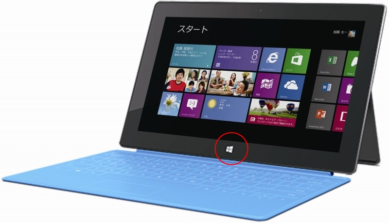
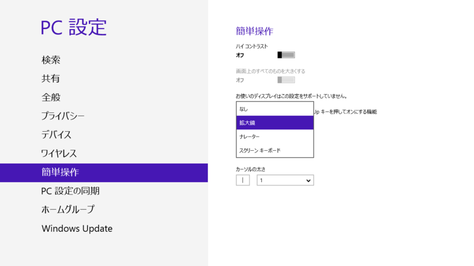
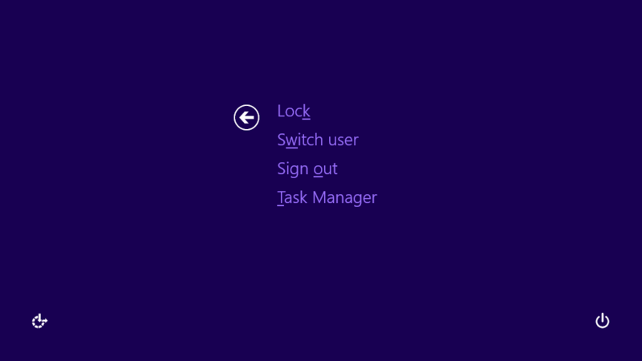

Surface RT：（本体側の）［Windows］キーの機能
公開日：

Surface RT のベゼル下部に設けられている Windows ロゴキーを押すと、現在表示中の画面とスタート画面を切り替えることができる。押すとブルッと振動するフィードバック機能がちょっとイケてる*1。
けれど、このボタン、ほかにもいろんなことに使えるんだよ。ただし、キーボードの［Windows］キーでは使えないので注意*2。
［Windows］＋［Volume Down］キー＝スクリーンショットの保存
これは有名かも。スクリーンショットを撮影して、
C:\Users\（ユーザー名）\Pictures\Screenshots
に保存する。［Windows］＋［PrintScreen］キーの動作と同じだね。
［Windows］＋［Volume Up］キー＝いろいろ

初期設定では「ナレーター」に割り当てられていて、操作を読み上げてくれる。ただ、［Windows］＋［Volume Up］キーと間違って押しちゃって、いきなりしゃべりだして困ることも多い。止め方が分からないとあたふたしちゃう。
実はこのキーコンビネーションには、［PC 設定］－［簡単操作］メニューで「拡大鏡」や「スクリーンキーボード」を割り当てることもできる。個人的には「拡大鏡」が一番おすすめ。プレゼンのときにかなり使える。

［Windows］＋電源ボタン＝［Ctrl］＋［Alt］＋［Del］キー

ちょっとコツがいるのだけど、［Windows］キーを少し長押しして電源ボタンを押すと、［Ctrl］＋［Alt］＋［Del］キーと同じ動作になる。万が一フリーズしても、わざわざ Touch Cover を開かなくて済むね！